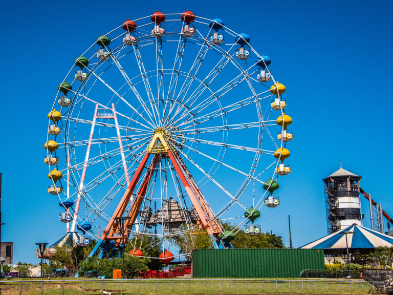
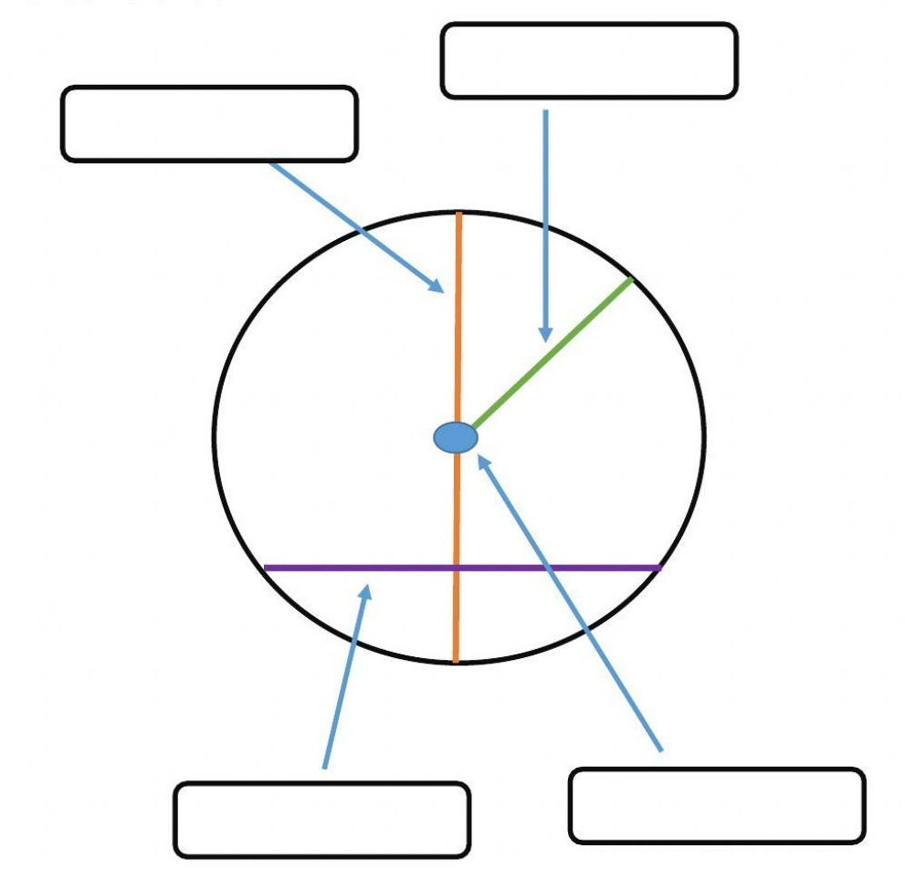
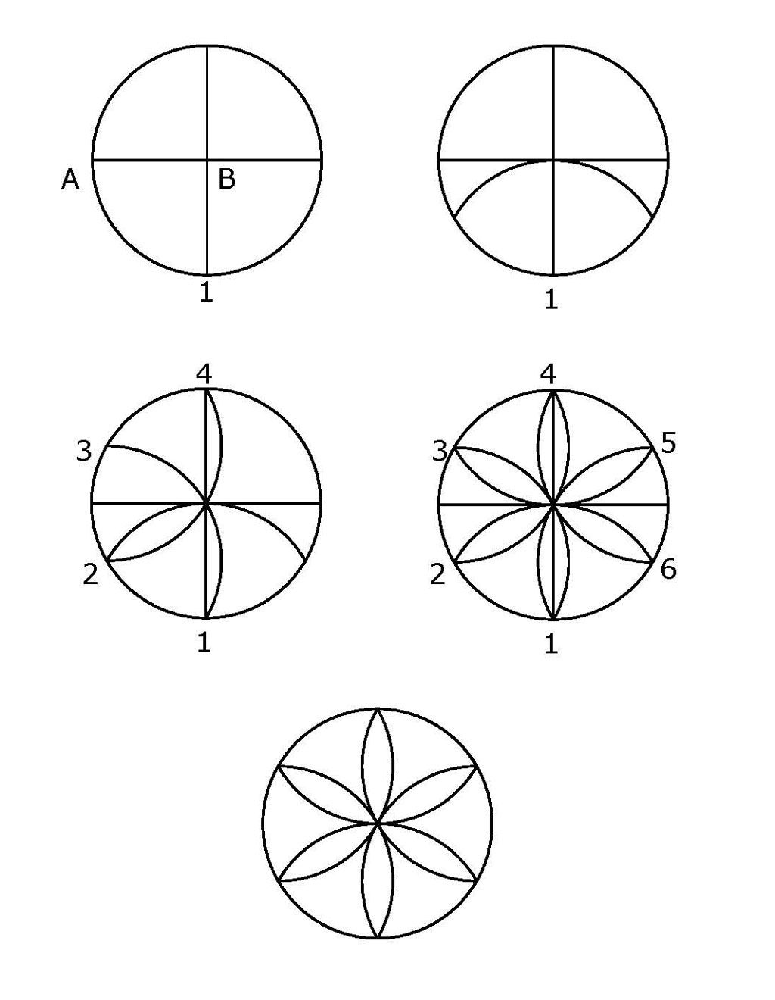

Proyecto N° 4: Parque de diversiones
I. Presentación:
Existen muchos parques de diversiones por todo el mundo. Tal vez tuviste la oportunidad de conocer alguno, al menos por fotos o algún video. En ellos hay variedad de entretenimientos: la montaña rusa, la vuelta al mundo, las sillas voladoras, el trencito, entre otros.
Desafío: Construir con el kit de Rasti, un mecanismo seguro y emocionante que haga girar las sillas alrededor de un círculo, simulando la vuelta al mundo.
II. Investigación:
- Observar el siguiente video: El círculo y la circunferencia. y responder en tu carpeta:
- ¿Qué es el circulo?
- ¿Qué es la circunferencia?
- Escribe el nombre de los siguientes elementos de la circunferencia: 
- Trazar con el compás las siguientes circunferencias:
- Radio = 3cm ¿Cuánto mide el diámetro?
- Diámetro = 7cm ¿Cuánto mide el radio?
- Realizar una composición en una hoja lisa N° 3 utilizando el compás. Intenta recrear una mandala. Ejemplo: 
III. Planificación:
- Dibujar y completar la tabla de roles.
- ¿Qué componentes utilizarán y a qué puertos los deben conectar?
IV. Crear:
- Construir la maqueta siguiendo la guía de armado (3.1 Parque de diversiones).
- Escribir el algoritmo del programa.
V. Reflexionar y Compartir:
- Explicar el funcionamiento del modelo.
- ¿Qué dificultades encontraron y cómo las solucionaron?
- ¿Qué mejoras le agregarían?
- ¿Cómo calificas el desempeño del equipo?